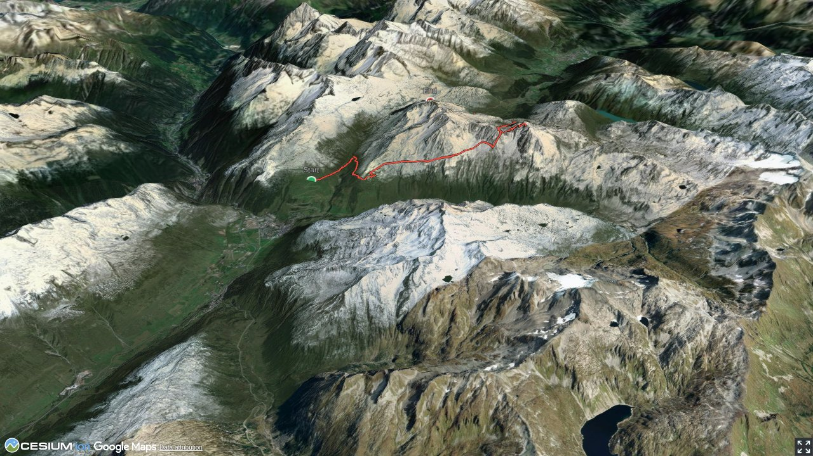

Badus is said to mean steep, reclining. But the same mountain has a second name, Six Madun. Six is a rock head, Madun (Madone) is a pillar or a column. Correspondingly the access via Six Madun Egg is a steep, inclined ramp with a rocky head.
From Lai da Tuma a side trip of about 20 minutes brings you to the beautifully located Badushütte.
Quick Facts
| Summit elevation | 2874 m |
|---|---|
| Difficulty | SAC T4+ Check the route notes below for terrain and commitment level. Guide |
| Trailhead | Nätschen, Bahnhof |
| Region | Northern Alps |
| Canton | Uri |
| Distance | 13.5 km (out-and-back) |
| Total ascent | ~1022 m |
| Elevation range | 1824-2874 m |
| Route sources | SAC Route Portal |
Photos


Planning
i
i
sac_scale (precise T1–T6) with
swissTLM3D Wanderwegart
fallback where OSM is silent (coarser T2/T3 and T4+ buckets).
Coverage: OSM 57.0% · swisstopo 15.3% · unknown 26.7%.Elevations computed from the inlined GPX track (SwissTopo height API).
Loading forecast…
Start: Nätschen, Bahnhof (1824 m)
End: Oberalppass (2041 m)
3D Terrain View

Route Details
From Nätschen via Six Madun Egg (western rib) to Oberalppass
Terrain & safety
Challenging route finding between Rossboden and the foot of Six Madun Egg. Six Madun Egg is grassy, interspersed with rocks and boulders. A path is visible almost on the entire segment. Some scrambling is needed right at the top, shortly before P. 2749. Some orientational skills are required, and the remoteness of the tour should not be underestimated. In wet conditions the route becomes challenging!
Source: SAC Route Portal
Field Reference
| Trailhead | Nätschen, Bahnhof | 46.64200, 8.61060 |
|---|---|---|
| Summit | Badus Six Madun (2874 m) | 46.62251, 8.66367 |
Coordinates are WGS84 decimal degrees (lat, lon). Emergency: 112 (general) or 1414 (Rega air rescue). Page URL: